Vamos a suponer que tenemos la siguiente clase Estudiante, con la siguiente estructura:
public class Estudiante {
private String nia;
private String nombre;
private String apellidos;
public Estudiante (String nia, String nombre, String apellidos){
this.nia = nia;
this.nombre=nombre;
this.apellidos=apellidos;
}
}Nos vamos al main y creamos una instancia de nuestra clase. Observa que Java nos permite usar los métodos .equals() y hashCode():
public class Main {
public static void main(String[] args) {
Estudiante estudiante1 = new Estudiante("12345667","Carlos","Pérez Sánchez");
estudiante1.equals();
estudiante1.hashCode();
}
}El método hashCode devolverá un número entero que identificará a nuestro estudiante según la implementación de este en la clase Object:
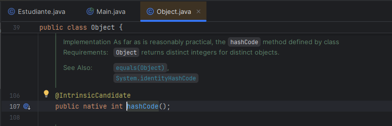
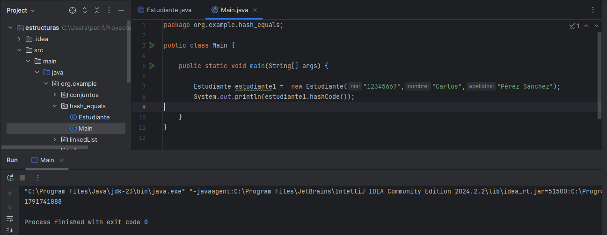
pero es recomendable que nosotros implementemos nuestra propia versión sobreescribiéndolo.
Podríamos hacerlo a mano, teniendo en cuenta que se debe devolver un valor numérico. Por ejemplo,
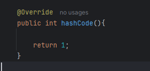
Pero dado que nos interesa que ese valor numérico sea lo más único posible para identificar bien a nuestros objetos, haremos uso del generador del IDE IntelliJ. No se recomienda hacerlo manualmente.
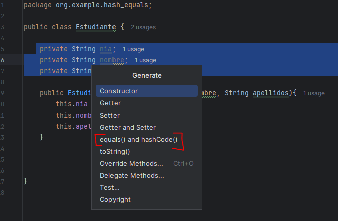
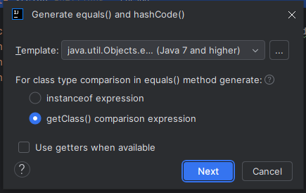
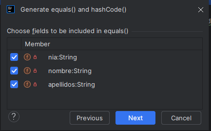
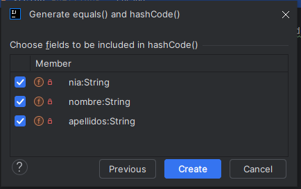
Lo que obtenemos es el siguiente código:
public class Estudiante {
private String nia;
private String nombre;
private String apellidos;
public Estudiante (String nia, String nombre, String apellidos){
this.nia = nia;
this.nombre=nombre;
this.apellidos=apellidos;
}
// @Override
// public boolean equals(Object o) {
// if (this == o) return true;
// if (o == null || getClass() != o.getClass()) return false;
// Estudiante that = (Estudiante) o;
// return Objects.equals(nia, that.nia) && Objects.equals(nombre, that.nombre) && Objects.equals(apellidos, that.apellidos);
// }
@Override
public int hashCode() {
return Objects.hash(nia, nombre, apellidos);
}
}
Comentamos de momento el equals() generado. La recomendación que nos hace IntelliJ para el método hashCode() es la siguiente:
- Se mira si cada uno de sus atributos es nulo (o no),
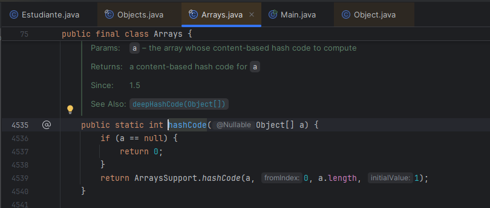
y seguidamente llama a un método que utiliza un multiplicador para dar valor al hash teniendo en cuenta los atributos de la clase. En este caso, el 31:
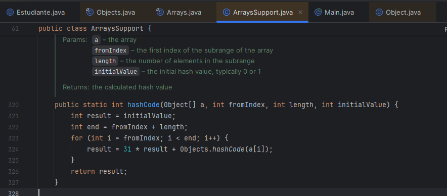
Para probarlo, vamos a crear otro estudiante con las mismas propiedades al que teníamos anteriormente. El resultado del hash debería ser igual entre ellos:
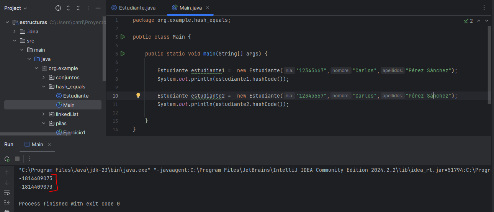
Ahora que ya controlamos que nuestros objetos obtengan el mismo hash, para terminar de identificar si son iguales deberemos sobreescribir el método equals para que no solamente se compruebe la referencia en memoria, sino también los valores de los atributos. Antes de recuperar el método que nos ha creado IntelliJ, vamos a hacer la siguiente prueba.
Vamos a añadir a nuestro main una condición para preguntar si nuestros objetos son iguales:
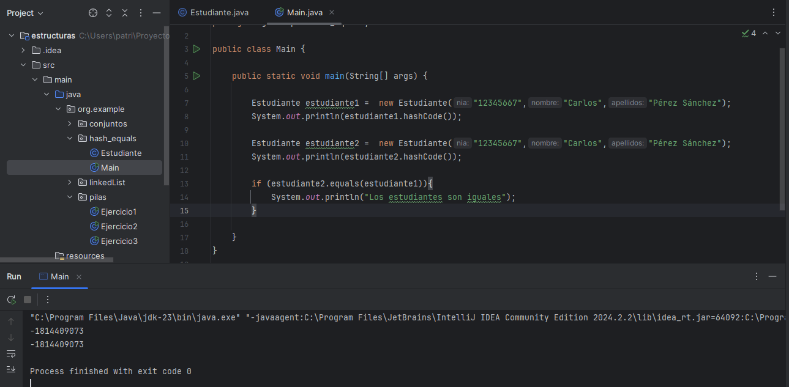
Fíjate que a pesar de ser aparentemente iguales, la condición no se cumple y no obtenemos la respuesta esperada. Esto se debe a que, aunque el hash ya es el mismo, el método equals por defecto sigue mirando solamente la referencia en memoria. En este caso, como nuestros objetos tendrán una dirección de memoria distinta (referenciados como estudiante1 y estudiante2), la condición no se cumplirá.
Para que el método equals compruebe también el valor de los atributos, vamos a descomentar las líneas generadas por IntelliJ para sobreescribirlo:
package org.example.hash_equals;
import java.util.Objects;
public class Estudiante {
private String nia;
private String nombre;
private String apellidos;
public Estudiante(String nia, String nombre, String apellidos) {
this.nia = nia;
this.nombre = nombre;
this.apellidos = apellidos;
}
@Override
public boolean equals(Object o) {
if (this == o) return true;
if (o == null || getClass() != o.getClass()) return false;
Estudiante that = (Estudiante) o;
return Objects.equals(nia, that.nia) && Objects.equals(nombre, that.nombre) && Objects.equals(apellidos, that.apellidos);
}
@Override
public int hashCode() {
return Objects.hash(nia, nombre, apellidos);
}
}
En este caso, la primera condición que va a mirar equals es igualmente si el objeto que hemos pasado apunta a la misma dirección de memoria que el actual. Después, mira si la clase es la misma (o no) con la instancia actual y el objeto que hemos pasado por parámetro. Y además, ahora también comprueba que los atributos de cada uno de los objetos comparados también sean iguales.
Si ahora volvemos a lanzar nuestro programa,
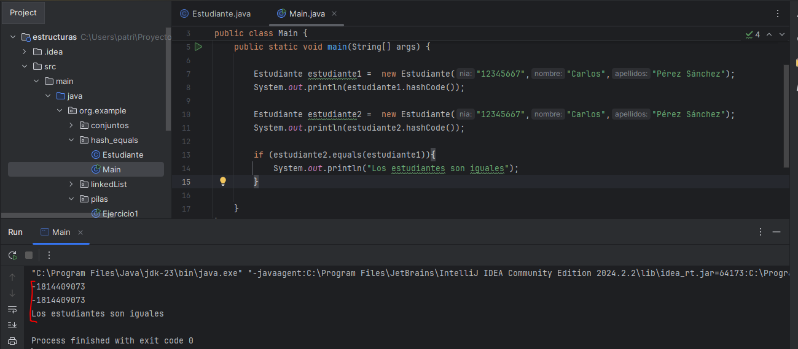
Java ya detecta que se trata del mismo objeto, ya que además de la dirección de memoria, comprueba los valores de los atributos.
Modificar implementación de equals() para que solamente se tenga en cuenta ciertos atributos
Es posible que necesitemos considerar que dos objetos son iguales en función de alguno de los atributos, y no por todos. En el ejemplo anterior, podríamos establecer el nia para considerar si dos estudiantes son iguales o no, ya que podrían tener el mismo nombre y apellidos.
Para adaptar el método equals a nuestras necesidades, podremos modificarlo a mano siempre que sea necesario. En este caso, vamos a eliminar la condición que mira si el nombre y los apellidos también son iguales, y dejaremos solamente la condición del nia.
@Override
public boolean equals(Object o) {
if (this == o) return true;
if (o == null || getClass() != o.getClass()) return false;
Estudiante that = (Estudiante) o;
return Objects.equals(nia, that.nia);
}De esta forma, solamente se considerará a dos estudiantes iguales si el nia que se ha guardado es el mismo.
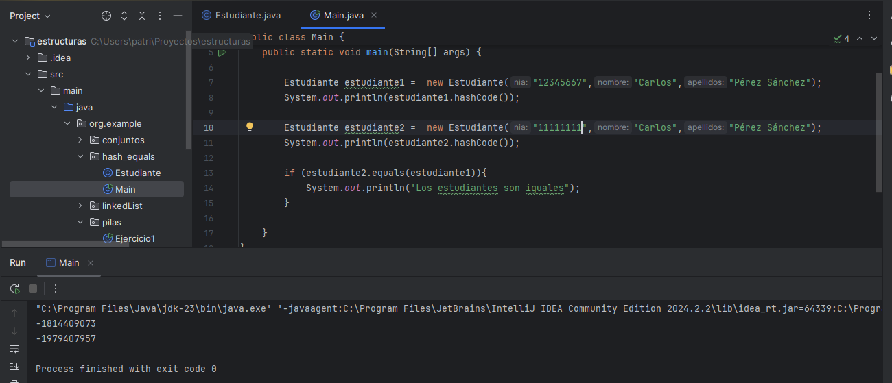
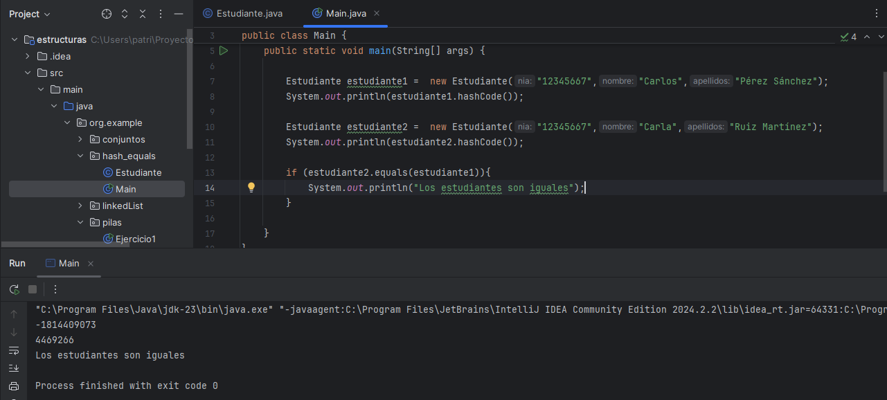
OJO porque ahora el valor hash no será el mismo. Por eso, es importante que los dos métodos estén implementados juntos.